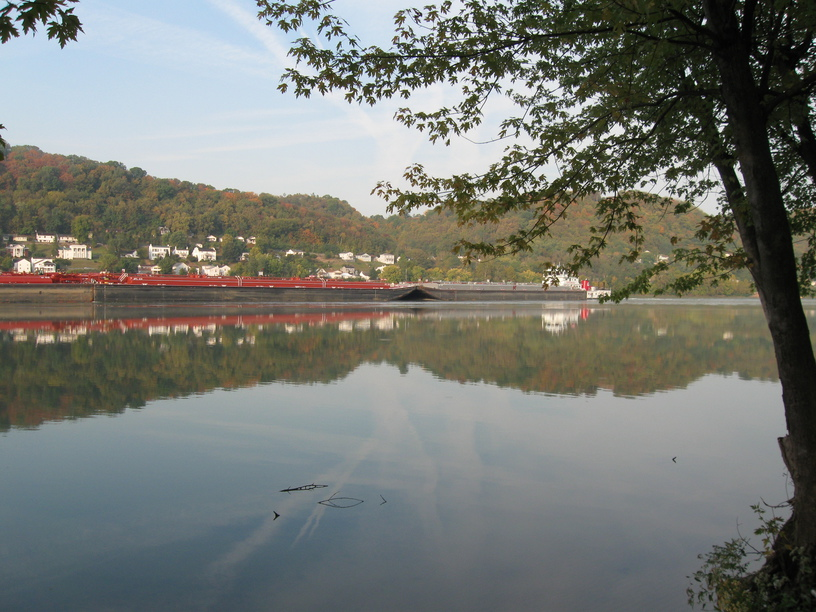

6 Oct 08, Kentucky
Kentucky is beautiful, hilly, & friendly country.
Met three different people today. First was Dooley, who pulled up behind me on his bike when I had stopped to read my map & take a picture. I had a motorcyclist pull up next to me & ask about my trip—apparently he had done the same sort of thing for some time. Then, at the end of my day I stopped & asked a guy if I could camp in his yard. We got to talking and it turns out that Mark (& his brother) had ridden their bicycles from Lake Erie to Key West in the recent past. He had lots of questions for me, and was very generous & hospitable.
